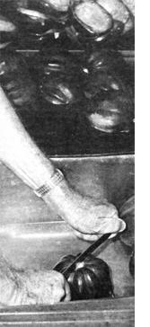

For all you hungry gardeners out there, here's a tip on. . .
Splitting your root-cellar-stored hard shelled acorn squash can be a very slippery, and hazardous, undertaking . . . however, I've come up with a simple solution: Use the kitchen sink to provide yourself with an effective helping hand!
When you harvest your crop, leave the stems attached so that the squash will continue to ripen. Then, once the time comes for you to cook up one of the glossy beauties, knock off the stem and stand the vegetable, point down, in the drain of the kitchen sink. While it's anchored firmly in the hole, you'll be able to split the squash safely and quickly, using a heavy butcher knife.
And how you prepare the squash after that, of course, will depend on the particular toothsome delight you're bent on whipping up!
|
 |
|
|